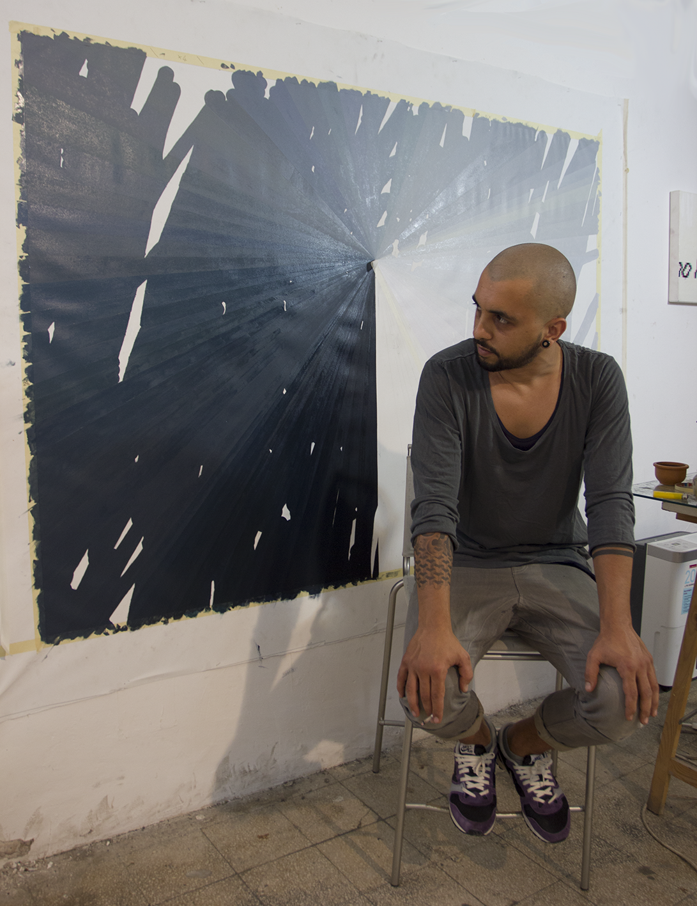
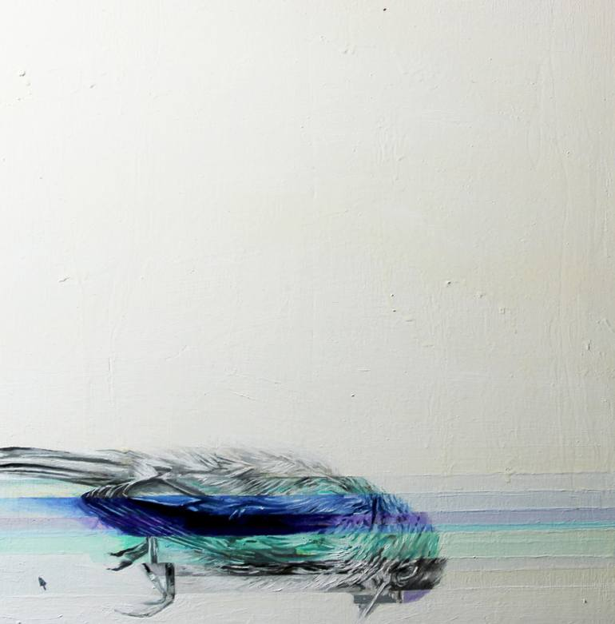
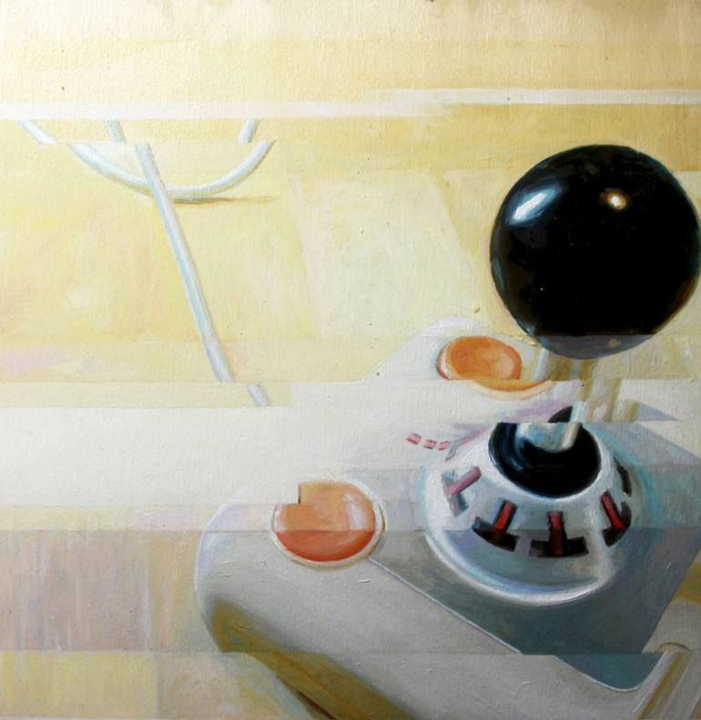

Simone Giordano
Simone Giordano is an Italian based artist who utilizes paint medium to create artworks that combine both the physical and technological realm. Simone is a graduate of the Accademia delle Belle Arti di Roma, and has been using technology in his artwork for 6-7 years. Simone uses his paintings as a means of expressing his thoughts on the software, and how it has become an everyday interface of our world. Simone states that,
"The software is today our interface with the world, with others, with our memory and our imagination, a universal language through which the world communicates and a universal engine thank's what the world moves. Is a blanket that wraps all the areas of contemporary society and with our mobile devices are connected in anywhere and the touch screen, has brought us back to the touch, reversing the thought of Freud, in which man is afraid of his body and the eye has better on tattoo. And if in the ages of mechanics, we operated an extension of our body in a spatial sense, today, after over a century of technological use of electricity, we have extended our central nervous system itself in a global embrace that, at least for our planet, abolishes much time as space."
What?
Simone's work seeks to represent the merging of the digital sphere with our everyday interactions. He states that he wishes to create pieces that are the starting point to a thought, rather than the embodiment of a thought. Therefore, his work is open to a multitude of interpretations and points of view. To represent this, he employs the use of pixilation in many of his paintings. His rigid digital pixelated forms attempt to create an order, give meaning to chaos, and bring clarity and simplification. He merges the digital and physical realm to create complex works that detail the progression of society today. Most of the time his pixilated paintings represent objects. However, on closer inspection they are only supposed to show the interaction of colors beings used. He also states that his paintings have no definitive meaning and are open to all interpretations.
Simone'technique for creating art involves both digital and technological platforms. However, he choses not to refere to his media as either digital or traditional. Rather, he referes to his work as "metamedium". His works all begin in Photoshop, Illustrator, and video editing softwares. His influences include Bruce Nauman, Gerhard Richter, Milos Manetas, Pino Pascali, Francis Bacon, Sol LeWitt. And many many others. He has also worked with his brother Matteo Giordano, who is an artist too based in Berlin, as making videos for a few fashion brands and independent projects.
Simone describes tangles of wires, cords, and other electronic devices as today's genera scenes. In his interview on rhizome, he descibes the wire genera scene as a digital alternative point of view to tell what lies behind a cold surface. He also speaks about a "miserable future" where technology is paramount and human interaction is limited.
Simone also uses glitches in his artwork. He believes there is beauty in the glitch, as it is something completely left up to chance. It creates and distorts in ways that are beyond the capabilities of humans. However, he notes that he has complete control over the aesthetic appearance of the glitch in his artwork.
Simone also sites Rome as one of the influences of his work, as the city combines old and new aesthetic and technologies, much like his artwork. Technology is prevalent in one of the oldest cities in the world.
I chose to research Samone's work because I find a lot of similarities in our style, technique, and preferred medium. Originally, I started out as a fine-artist, creating mostly paintings and drawings. I find Samone's approach to combining both technological and physical media to be quite compelling.
In addition, while Simone states that his work is largely open to all different sorts of interpretation and lacks definitive meaning, I've developed my own interpretation of his work through analyzing his interview. I believe that most of his works seek to illustrate a bleak, vapid future, void of human interaction. I find that, in most of his paintings, the digital forms almost seem to overpower the still-life. In addition, Simone speaks about a miserable future, and how the future is pointing in a direction that favors technology over human interaction. I believe that his work almost seeks to be a warning or foreshadowing of what is to come in the future.